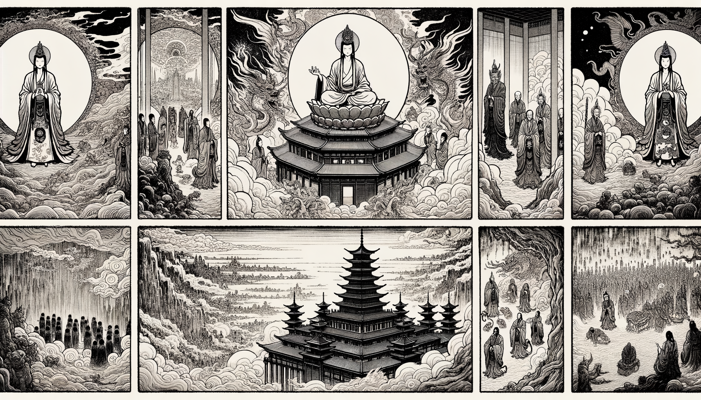

十二巻 巻一覧
正法眼藏第11 一百八法明門
本ページの導入・語彙・深掘り・クイズは tools/regen_volume_intro_from_corpus.py が OpenAI API で生成したものです（入力は当巻冒頭原文の抜粋）。内容はモデル出力のため、重要箇所は必ず原文・教本と照合してください。
出典: https://shomonji.or.jp/zazen/doc/genzou.html
（ローカル生成の全文: 全文ページ）
この巻の位置（導入）
護明菩薩が兜率陀の宮で法要を説くために集まった天衆に向けて、一法明門を説くことを告げる。
菩薩は一百八法明門を宣暢することが重要であるとし、天衆にその内容を心して聴くように促す。
語彙の足場
- 護明菩薩：護明菩薩は、法を説くために天界に現れた菩薩であり、特に人間界に生まれ変わるための教えを伝える役割を持つ。
- 法明門：法明門とは、菩薩が教える法の入口を示し、修行者が悟りに至るための道を示す重要な教えである。
- 兜率陀：兜率陀は、天界の一つであり、菩薩が法を説くために集まる場所として描かれている。
- 一百八法明門：一百八法明門は、菩薩が説く具体的な教えの数を示し、それぞれが修行者にとって重要な指針となる。
- 安坐：安坐は、菩薩が静かに座ることを指し、法を説くための準備を整える行為である。
本文（冒頭・抜粋）
出典はリポジトリ内 doc/正法眼蔵.txt です。原文の参照元: https://shomonji.or.jp/zazen/doc/genzou.html
爾時護明菩薩、觀生家已。時兜率陀有一天宮、名曰高幢、縱廣正等六十由旬。菩薩時時上彼宮中、爲兜率天説於法要。是時菩薩、上於彼宮、安坐訖已、告於兜率諸天子言、汝等諸天、應來聚集、我身不久下於人間。我今欲説一法明門、名入諸法相方便門。留教化汝最後。汝等憶念我故、汝等若聞此法門者、應生歡喜（爾の時に護明菩薩、生家を觀じ已りぬ。時に兜率陀に一天宮有り、名を高幢と曰ふ、縱廣正等六十由旬なり。菩薩時時に彼の宮の中に上り、兜率天の爲に法要を説けり。是の時に菩薩、彼の宮に上りて、安坐し訖已りて、兜率諸天子に告げて言く、汝等諸天、應に來り聚集るべし、我が身久しからずして人間に下るべし。我れ今一の法明門を説かんと欲ふ、入諸法相方便門と名づく。教を留めて汝を化すること最後なり。汝等我れを憶念するが故に、汝等若し此の法門を聞かば、應に歡喜を生ずべし）。
時兜率陀諸天大衆、聞於菩薩如此語已、及天玉女、一切眷屬、皆來聚集、上於彼宮（時に兜率陀諸天の大衆、菩薩の此の如く語るを聞き已りて、天の玉女、一切の眷屬に及ぶまで、皆な來り聚集りて、彼の宮に上りぬ）。
護明菩薩、見彼天衆聚會畢已、欲爲説法、卽時更化作一天宮、在彼高幢本天宮上。高大廣闊、覆四天下、可喜微妙、端正少雙、威徳巍巍、衆寶莊餝。一切欲界天宮殿中、無匹喩者。色界諸天、見彼化殿、於自宮殿、生如是心、如塚墓相（護明菩薩、彼の天衆の聚會り畢已れるを見て、爲に法を説かんと欲ひて、卽時更に一天宮を化作して、彼の高幢を本天宮の上に在けり。高大廣闊にして四天下を覆ひ、喜ぶべき微妙、端正雙び少く威徳巍巍たり、衆寶もて莊餝せり。一切欲界の天宮殿の中に、匹喩すべき者無し。色界の諸天、彼の化殿を見て、自が宮殿に於て是の如くの心を生ぜり、塚墓の相の如しと）。
時護明菩薩、已於過去、行於寶行、種諸善根、成就福聚、功徳具足、所成莊嚴、師子高座昇上而坐（時に護明菩薩、已に過去に於て、寶行を行じ、諸の善根を種ゑて、福聚を成就し、功徳具足して、成ぜる所の莊嚴の師子の高座に昇上りて坐せり）。
護明菩薩、在彼師子高座之上、無量諸寶、莊嚴間錯無量無邊。種種天衣而敷彼座、種種妙香以薰彼座。無量無邊寶爐燒香、出於種種微妙香花、散其地上。高座周匝有諸珍寶、百千萬億莊嚴放光、顯耀彼宮。彼宮上下寶網羅覆、於彼羅網多懸金鈴。彼諸金鈴出聲微妙。彼大寶宮、復出無量種種光明。彼寶宮殿千萬幡蓋、種種妙色映覆於上。彼大宮殿、垂諸旒蘇、無量無邊百千萬億諸天玉女、各持種種七寶、音聲作樂讃歎、説於菩薩往昔無量無邊功徳。護世四王百千萬億、在於左右守護彼宮。千萬帝釋禮拜彼宮、千萬梵天恭敬彼宮。又諸菩薩百千萬億那由他衆、護持彼宮。十方諸佛、有於萬億那由他數、護念彼宮。百千萬億那由他劫所修行、行諸波羅蜜、福報成就、因緣具足、日夜増長、無量功徳、悉皆莊嚴。如是如是、難説難説（護明菩薩、彼の師子の高座の上に在り、無量の諸寶、莊嚴間錯して無量無邊なり。種種の天衣而も彼の座に敷き、種種の妙香以て彼の座に薰ず。無量無邊の寶爐に燒香し、種種微妙の香花を出して其の地上に散ず。高座を周匝して諸の珍寶有り、百千萬億の莊嚴放光、彼の宮を顯耀かす。彼の宮の上下は寶網羅もて覆ひ、彼の羅網には多く金鈴を懸く。彼の諸の金鈴、聲を出すこと微妙なり。彼の大寶宮、復た無量種種の光明を出す。彼の寶宮殿の千萬の幡蓋、種種の妙色あつて映つて上に覆ふ。彼の大宮殿、諸の旒蘇を垂れ、無量無邊百千萬億の諸の天の玉女、各種種の七寶を持し、音聲もて作樂し讃歎して、菩薩往昔よりの無量無邊の功徳を説く。護世の四王百千萬億、左右に在りて彼の宮を守護す。千萬の帝釋彼の宮を禮拜し、千萬の梵天彼の宮を恭敬す。又諸の菩薩百千萬億那由他衆、彼の宮を護持す。十方の諸佛、萬億那由他數有りて、彼の宮を護念したまふ。百千萬億那由他劫に修せし所の行、諸波羅蜜を行ぜし、福報成就し、因緣具足し、日夜に増長し、無量の功徳、悉皆莊嚴せり。是の如く是の如く、難説難説なり）。
彼大微妙師子高座、菩薩坐上、告於一切諸天衆言、汝等諸天、今此一百八法明門、一生補處菩薩大士、在兜率宮、欲下託生於人間者、於天衆前、要須宣暢説此一百八法明門。留與諸天以作憶念、然後下生。汝等諸天、今可至心諦聽諦受、我今説之（彼の大微妙なる師子の高座に、菩薩、上に坐して一切諸天衆に告げて言く、汝等諸天、今此の一百八法明門、一生補處の菩薩大士、兜率宮に在つて、下つて人間に託生せんと欲る者、天衆の前に於て、要らず須らく此の一百八法明門を宣暢して説くべし。諸天に留與して以て憶念を作さしめ、然る後下生す。汝等諸天、今至心に諦聽し諦受すべし、我れ今之を説くべし）。
一百八法明門者何（一百八法明門とは何ぞや）。
正信是法明門、不破堅牢心故（正信是れ法明門なり、堅牢の心を破せざるが故に）。
淨心是法明門、無濁穢故（淨心是れ法明門なり、濁穢なきが故に）。
歡喜是法明門、安穩心故（歡喜是れ法明門なり、安穩心の故に）。
愛樂是法明門、令心淸淨故（愛樂是れ法明門なり、心をして淸淨ならしむるが故に）。
身行正行是法明門、三業淨故（身行正行是れ法明門なり、三業淨きが故に）。
口行淨行是法明門、斷四惡故（口行淨行是れ法明門なり、四惡を斷ずるが故に）。
意行淨行是法明門、斷三毒故（意行淨行是れ法明門なり、三毒を斷ずるが故に）。
念佛是法明門、觀佛淸淨故（念佛是れ法明門なり、觀佛淸淨なるが故に）。
念法是法明門、觀法淸淨故（念法是れ法明門なり、觀法淸淨なるが故に）。
念僧是法明門、得道堅牢故（念僧是れ法明門なり、得道堅牢なるが故に）。
念施是法明門、不望果報故（念施是れ法明門なり、果報を望まざるが故に）。
念戒是法明門、一切願具足故（念戒是れ法明門なり、一切の願具足するが故に）。
念天是法明門、發廣大心故（念天是れ法明門なり、廣大心を發すが故に）。
慈是法明門、一切生處善根攝勝故（慈是れ法明門なり、一切の生處に善根攝勝なるが故に）。
悲是法明門、不殺害衆生故（悲是れ法明門なり、衆生を殺害せざるが故に）。
喜是法明門、捨一切不喜事故（喜是れ法明門なり、一切不喜の事を捨するが故に）。
捨是法明門、厭離五欲故（捨是れ法明門なり、五欲を厭離するが故に）。
無常觀是法明門、觀三界慾故（無常觀是れ法明門なり、三界の慾を觀ずるが故に）。
苦觀是法明門、斷一切願故（苦觀是れ法明門なり、一切の願を斷ずるが故に）。
無我觀是法明門、不染著我故（無我觀是れ法明門なり、我に染著せざるが故に）。
寂定觀是法明門、不擾亂心意故（寂定觀是れ法明門なり、心意を擾亂せざるが故に）。
慚愧是法明門、内心寂定故（慚愧是れ法明門なり、内心寂定なるが故に）。
羞恥是法明門、外惡滅故（羞恥是れ法明門なり、外惡滅するが故に）。
實是法明門、不誑天人故（實是れ法明門なり、天人を誑かさざるが故に）。
眞是法明門、不誑自身故（眞是れ法明門なり、自身を誑かさざるが故に）。
法行是法明門、隨順法行故（法行是れ法明門なり、法行に隨順するが故に）。
三歸是法明門、淨三惡道故（三歸是れ法明門なり、三惡道を淨からしむるが故に）。
知恩是法明門、不捨善根故（知恩是れ法明門なり、善根を捨せざるが故に）。
報恩是法明門、不欺負他故（報恩是れ法明門なり、他を欺負せざるが故に）。
不自欺是法明門、不自譽故（不自欺是れ法明門なり、自ら譽めざるが故に）。
爲衆生是法明門、不毀呰他故（爲衆生是れ法明門なり、他を毀呰せざるが故に）。
爲法是法明門、如法而行故（爲法是れ法明門なり、如法にして行ずるが故に）。
知時是法明門、不輕言説故（知時是れ法明門なり、言説を輕んぜざるが故に）。
攝我慢是法明門、智惠滿足故（攝我慢是れ法明門なり、智惠滿足するが故に）。
不生惡心是法明門、自護護他故（不生惡心是れ法明門なり、自ら護し他を護するが故に）。
無障礙是法明門、心無疑惑故（無障礙是れ法明門なり、心、疑惑無きが故に）。
信解是法明門、決了第一義故（信解是れ法明門なり、第一義を決了するが故に）。
不淨觀是法明門、捨欲染心故（不淨觀是れ法明門なり、欲染の心を捨するが故に）。
不諍鬪是法明門、斷瞋訟故（不諍鬪是れ法明門なり、瞋訟を斷ずるが故に）。
不癡是法明門、斷殺生故（不癡是れ法明門なり、殺生を斷ずるが故に）。
樂法義是法明門、求法義故（樂法義是れ法明門なり、法義を求むるが故に）。
愛法明是法明門、得法明故（愛法明是れ法明門なり、法明を得るが故に）。
求多聞是法明門、正觀法相故（求多聞是れ法明門なり、法相を正觀するが故に）。
正方便是法明門、具正行故（正方便是れ法明門なり、正行を具するが故に）。
知名色是法明門、除諸障礙故（知名色是れ法明門なり、諸の障礙を除くが故に）。
除因見是法明門、得解脱故（除因見是れ法明門なり、解脱を得るが故に）。
無怨親心是法明門、於怨親中生平等故（無怨親心是れ法明門なり、怨親の中に平等を生ずるが故に）。
陰方便是法明門、知諸苦故（陰方便是れ法明門なり、諸の苦を知るが故に）。
諸大平等是法明門、斷於一切和合法故（諸大平等是れ法明門なり、一切和合の法を斷ずるが故に）。
諸入是法明門、修正道故（諸入是れ法明門なり、正道を修するが故に）。
無生忍是法明門、證滅諦故（無生忍是れ法明門なり、滅諦を證するが故に）。
受念處是法明門、斷一切諸受故（受念處是れ法明門なり、一切の諸受を斷ずるが故に）。
心念處是法明門、觀心如幻化故（心念處是れ法明門なり、心を觀ずること幻化の如きが故に）。
法念處是法明門、智惠無翳故（法念處是れ法明門なり、智惠無翳なるが故に）。
四正懃是法明門、斷一切惡成諸善故（四正懃是れ法明門なり、一切惡を斷じて諸の善を成ずるが故に）。
四如意足是法明門、身心輕故（四如意足是れ法明門なり、身心輕きが故に）。
信根是法明門、不隨他語故（信根是れ法明門なり、他の語に隨はざるが故に）。
精進根是法明門、善得諸智故（精進根是れ法明門なり、善く諸の智を得るが故に）。
念根是法明門、善作諸業故（念根是れ法明門なり、善く諸の業を作すが故に）。
定根是法明門、心淸淨故（定根是れ法明門なり、心淸淨なるが故に）。
慧根是法明門、現見諸法故（慧根是れ法明門なり、諸法を現見するが故に）。
信力是法明門、過諸魔力故（信力是れ法明門なり、諸の魔の力に過ぐるが故に）。
精進力是法明門、不退轉故（精進力是れ法明門なり、不退轉なるが故に）。
念力是法明門、不共他故（念力是れ法明門なり、他と共ならざるが故に）。
定力是法明門、斷一切念故（定力是れ法明門なり、一切の念を斷ずるが故に）。
図解（4コマ・AI生成）
教義の根拠は本文・出典に従い、漫画は比喩の補助に留めてください。

深掘り（読解の手掛かり）
- 護明菩薩は、法を説くために天衆を集める重要な役割を果たす。
- 一百八法明門は、菩薩が人間界に生まれ変わる前に宣揚されるべき教えである。
- 天衆は、菩薩の教えを聴くことで、心の準備を整え、菩薩の意志を理解する。
確認（形成評価）
各設問の下の「採点」で正誤を表示します（ブラウザ内のみ。ログは送りません）。